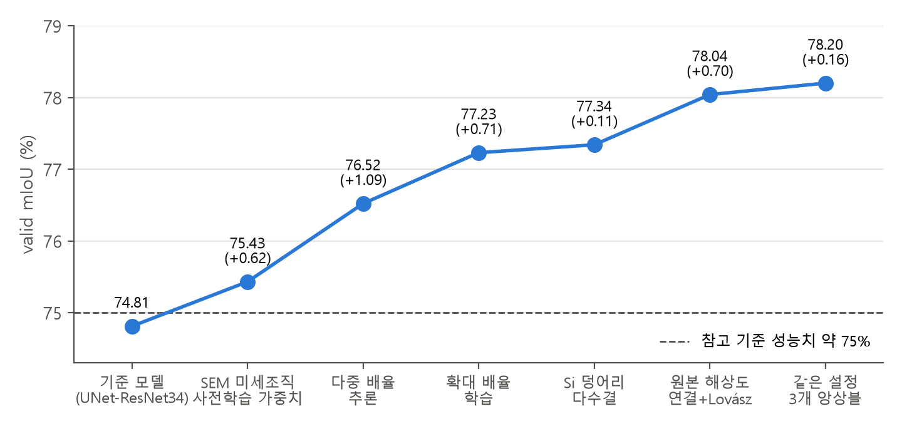
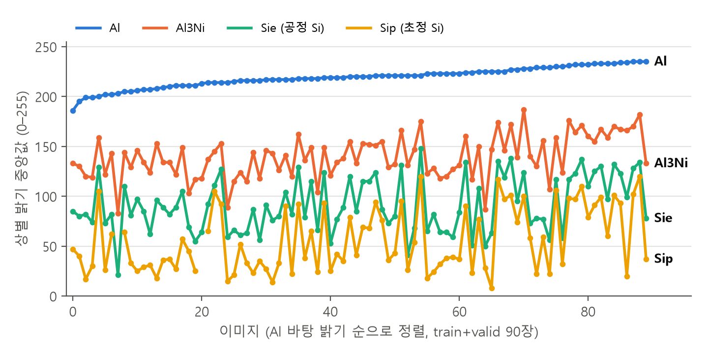
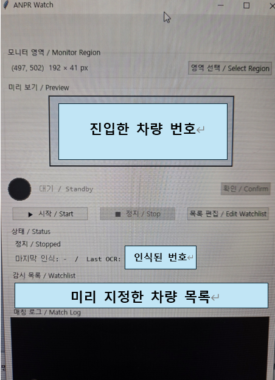
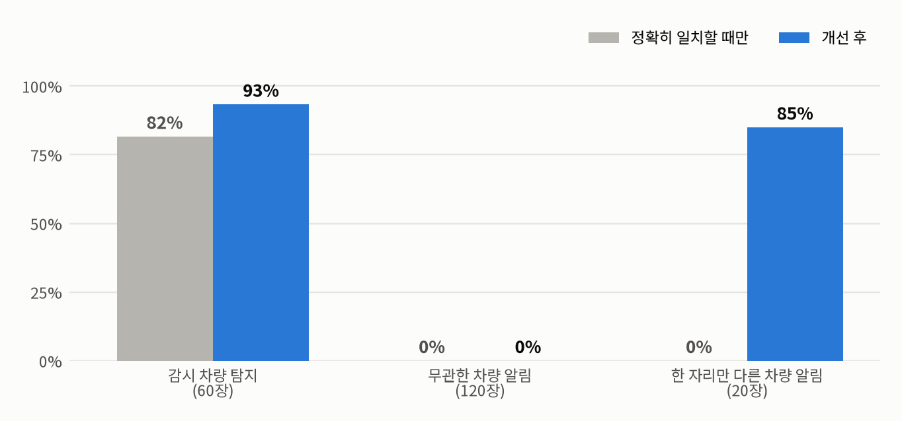
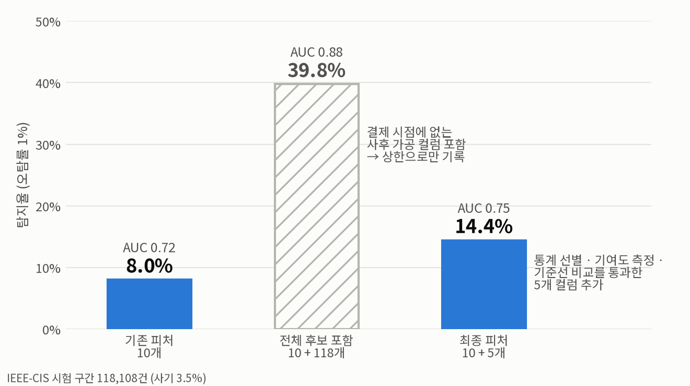
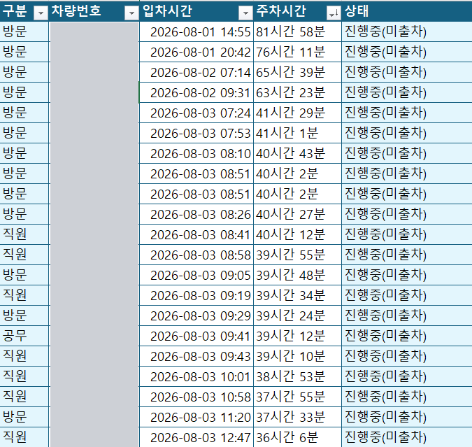

광학현미경 이미지를 4개 상으로 픽셀 단위 분할하는 모델
망분리 관제 PC에서 번호판을 읽어 의전 차량 진입을 알리는 프로그램
Kafka·Redis·FastAPI 실시간 판정과 Airflow 재학습·배포 자동화
주차장 출입 기록 필터링과 엑셀 보고서·대시보드 집계 자동화
고탄성 주조 알루미늄 합금의 광학현미경 이미지를 4개 상(Al, Al3Ni, 공정 Si, 초정 Si)으로 픽셀 단위 분할합니다.
추론 과정: 4개 배율 × 3개 모델의 확률을 평균한 뒤 응고 원리로 Si를 보정

적용 단계별 검증 mIoU
같은 상도 이미지마다 밝기 범위가 겹쳐(초정 Si 8~120, Al3Ni 83~187) 밝기로 구분할 수 없었습니다. 공정 Si는 2~4px로 얇아 축소하면 사라졌습니다.
검증 mIoU를 74.81%에서 78.20%로 높였고, 학습에 없던 합금 13장에서도 78.16%를 유지했습니다.
측정 조건: 검증 20장, 이미지별 4개 상 mIoU 평균

이미지별 상 밝기 (90장, 값은 흔들려도 순서는 유지)
관제 화면의 번호판을 읽어 의전 차량이 들어오면 알림을 울립니다. 네트워크가 차단된 관제 PC에서 상시 운영하고 있습니다.

관제 PC 실행 화면 (차량 번호는 가림)
Windows OCR이 번호판의 한 글자를 잘못 읽으면, 정확히 일치할 때만 울리는 방식으로는 감시 차량을 놓쳤습니다.
백테스트에서 감시 차량 탐지율이 82%에서 93%로 올랐고, 무관한 차량 알림은 0건을 유지했습니다. 한 자리만 다른 차량에도 알림이 울리지만(17/20), 놓치는 것보다 한 번 확인하는 편이 낫다고 판단했습니다.
실제 운영 기록은 보안상 싣지 않았습니다. 관제 화면과 같은 크기(192×41px)의 합성 번호판 200장에 배포본의 OCR과 매칭 코드를 적용하고, 같은 OCR 결과에서 매칭 방식만 바꿔 비교했습니다. 남은 미탐지 4건은 모두 판독 실패였습니다.
| 등록 번호 | OCR 판독 | 정확 일치 | 개선 후 |
|---|---|---|---|
| 90호5925 | 90오5925 | 놓침 | 알림 |
| 109조5635 | 109소5635 | 놓침 | 알림 |
| 20고1654 | 201654 | 놓침 | 알림 |
| 31아4010 | 371아4010 | 놓침 | 알림 |
| 18다3733 | (판독 없음) | 놓침 | 놓침 |

거래 59만 건을 실제 결제처럼 재생해 카드별 이력으로 위험도를 판정합니다. 재학습부터 배포까지 자동으로 진행됩니다.
컬럼을 추가하자 AUC가 0.72에서 0.88로 올랐습니다. 하지만 상승분 대부분은 거래 이후에 가공된 컬럼에서 나왔고, 결제 시점에는 없는 값입니다.
탐지율을 8.0%에서 14.4%로, PR-AUC를 0.114에서 0.184로 높였습니다.
측정 조건: IEEE-CIS 시험 구간 118,108건(사기 3.5%), 시간 기준 분할

하루 1,000대 이상 출입하는 주차장 기록에서 장시간 주차와 출차 누락 차량을 골라 보고서와 대시보드로 만듭니다.

집계 보고서 일부 (차량 번호는 가림)
카메라가 차량을 촬영하지 못해 출차 기록이 빠지면, 이미 나갔다 다시 들어온 차량까지 장시간 주차로 잡혔습니다. 그래서 보고서를 그대로 쓸 수 없었습니다.
결측 기록을 사람이 골라내던 검수 단계가 없어졌고, 매일 40분 넘던 집계가 파일 선택 한 번으로 줄었습니다.